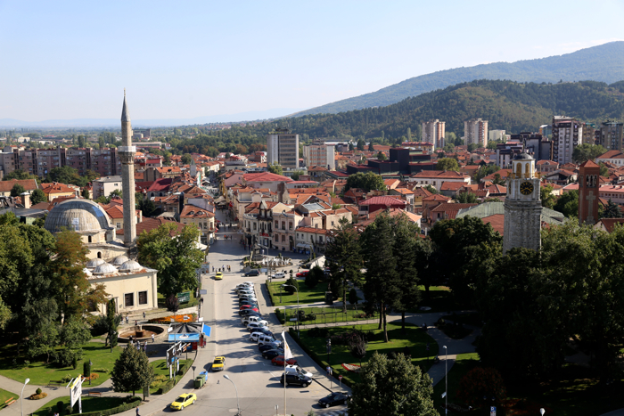

The city of Manastir

Bitola (or Manastir) is a city in the southwestern part of North Macedonia. It is located in the southern part of the Pelagonia valley, surrounded by the Baba, Nidže and Kajmakčalan mountain ranges, 14 kilometres (9 miles) north of the Medžitlija-Níki border crossing with Greece. The city stands at an important junction connecting the south of the Adriatic Sea region with the Aegean Sea and Central Europe, and is an administrative, cultural, industrial, commercial, and educational centre. It has been known since the Ottoman period as "The City of The Consuls", since many European countries had consulates in Bitola.
Bitola, known during the Ottoman Empire as Manastir or Monastir, is one of the oldest cities in North Macedonia. It was founded as Heraclea Lyncestis in the middle of the 4th century BC by Philip II of Macedon. The city was the last capital of Ottoman Rumelia, from 1836 to 1867. According to the 2002 census, Bitola is the second-largest city in the country. Bitola is also the seat of the Bitola Municipality.
Bitola is located in the southwestern part of North Macedonia. The Dragor River flows through the city. Bitola lies at an elevation of 615 metres above sea level, at the foot of Baba Mountain. Its magnificent Pelister mountain (2,601 m) is a national park with exquisite flora and fauna, among which is the rarest species of pine, known as Macedonian pine or pinus peuce. It is also the location of a well-known ski resort.
Covering an area of 1,798 km2 and with a population of 122,173, Bitola is an important industrial, agricultural, commercial, educational and cultural centre. It represents an important junction that connects the Adriatic Sea to the south with the Aegean Sea and Central Europe.